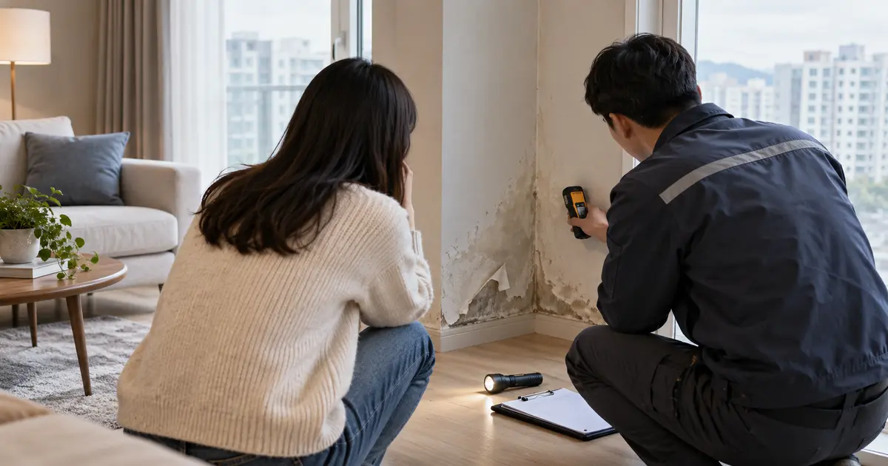
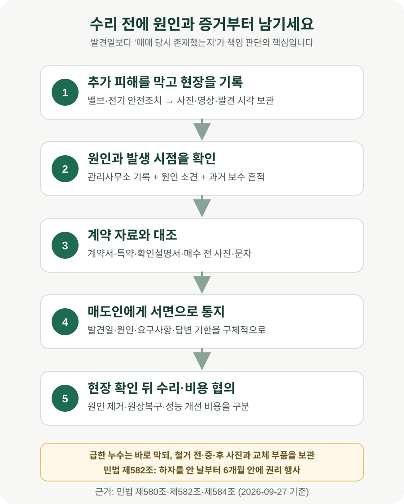

아파트를 산 뒤 누수·결로를 발견하면 전 주인에게 수리비를 받을 수 있을까?

매수 후 누수나 결로를 발견했다고 해서 전 주인이 무조건 수리비를 내는 것은 아닙니다. 매매 당시 이미 존재한 하자이고, 매수인이 계약할 때 알지 못했으며 과실로 놓친 것도 아니라는 점이 핵심입니다. 하자를 안 날부터 6개월 안에는 수리 요구나 손해배상 청구처럼 권리를 행사해야 합니다. 먼저 사진·영상과 관리사무소 기록을 확보하고, 원인을 적은 점검 보고서와 견적을 받은 뒤 매도인에게 서면으로 알리세요. 급한 누수라 수리를 미룰 수 없다면 철거 전 상태와 원인 부위를 충분히 촬영하고 교체 부품·영수증을 보관해야 합니다.
전 주인에게 연락하기 전에 세 가지 사실부터 확인하세요
누수 자국을 보면 가장 먼저 “전 주인이 숨긴 것 아닌가”라는 생각이 듭니다. 그러나 책임을 판단하려면 감정보다 하자의 원인과 시점을 먼저 확인해야 합니다. 민법 제580조는 매매 목적물에 하자가 있으면 매도인의 담보책임을 인정하면서도, 매수인이 그 하자를 알았거나 과실로 알지 못한 경우에는 적용하지 않는다고 정합니다.
여기서 말하는 하자는 단순히 새집처럼 깨끗하지 않다는 뜻이 아닙니다. 계약에서 예정한 상태나 통상 기대되는 사용·가치에 부족함이 있는지를 계약 내용과 주택의 연식, 가격, 고지 내용 등을 함께 보게 됩니다. 구축 아파트의 생활 흠집과 배관에서 계속 물이 새는 문제를 같은 수준으로 볼 수는 없습니다.
실무상 먼저 확인할 것은 다음 세 가지입니다. 첫째, 원인이 어디인지입니다. 윗집 전용배관, 공용배관, 외벽, 매수한 세대 내부 설비 중 어디에서 생겼는지에 따라 상대방이 달라집니다. 공용부분이나 윗집이 원인이라면 전 매도인만 붙잡고 해결할 문제가 아닐 수 있습니다. 둘째, 그 원인이 매매 당시에도 있었는지입니다. 잔금 후 새로 생긴 파손이라면 매도인 담보책임과 거리가 멉니다. 셋째, 계약할 때 이미 알았거나 통상적인 확인을 했으면 알 수 있었는지입니다. 계약서에 누수 이력이 적혀 있었거나 현장에서 뚜렷한 흔적을 확인하고도 매수했다면 판단이 달라집니다.
| 확인할 사실 | 매도인 책임을 검토할 단서 | 다른 상대를 먼저 볼 단서 |
|---|---|---|
| 원인 | 매매 전부터 진행된 세대 내부 배관·방수 하자 | 윗집 전용배관, 공용배관·외벽 등 |
| 발생 시점 | 과거 보수 흔적, 반복 민원, 장기간 진행 소견 | 인도 뒤 충격·동파·새 공사로 생긴 고장 |
| 매수인의 인식 | 가구·도배로 가려져 통상 확인이 어려웠음 | 계약서 고지, 현장에 뚜렷한 흔적, 사전 점검에서 확인 |
| 손해 범위 | 원인 제거와 합리적인 원상복구에 필요한 비용 | 하자와 무관한 전면 인테리어·성능 개선 |
“입주하고 발견했다”보다 “매매 때 이미 있었다”는 자료가 중요합니다
발견 날짜가 빠를수록 매매 당시에도 문제가 있었을 가능성을 설명하기는 쉬워집니다. 그렇다고 입주 다음 날 발견했다는 사실만으로 자동 입증되는 것은 아닙니다. 누수는 원인과 물길이 복잡하고, 결로는 단열·환기·난방과 날씨가 함께 작용할 수 있기 때문입니다.
점검 업체에는 단순히 “누수 맞습니다”라는 견적서보다 추정 원인, 원인 부위, 손상 범위, 오래 진행된 흔적 여부, 필요한 공사를 구분해 적어 달라고 요청하세요. 관리사무소에는 같은 위치의 과거 신고, 공용부 점검·보수, 윗집이나 아랫집 민원 기록이 있는지 문의합니다. 매수 전 집을 본 사진, 중개대상물 확인·설명서, 매도인과 주고받은 문자, 도배나 가구 철거 직후 사진도 시간 순서대로 보관합니다.
매도인이 하자를 알고 있었는지는 또 다른 쟁점입니다. 같은 자리를 여러 번 도배한 흔적, 누수 업체 방문 기록, 관리사무소 민원, 매수 전날 급히 가린 흔적 등이 있다면 고지 여부를 따져볼 자료가 됩니다. 다만 정황만으로 “고의 은폐”라고 단정해 공개적으로 비난하면 별도 분쟁이 생길 수 있습니다. 확인된 사실과 요구사항만 서면으로 전달하세요.
중개대상물 확인·설명서에 ‘누수 없음’이라고 적혀 있어도 그것만으로 원인과 책임이 모두 확정되는 것은 아닙니다. 반대로 ‘매수인이 현장을 확인함’이라는 문구만으로 숨은 하자에 관한 권리가 전부 사라진다고 단정할 수도 없습니다. 실제 설명 내용, 확인할 수 있었던 범위, 매도인의 인식, 계약 특약을 함께 봅니다.
6개월은 잔금일이 아니라 ‘하자를 안 날’부터입니다
민법 제582조는 하자담보책임에 따른 권리를 매수인이 그 사실을 안 날부터 6개월 안에 행사하도록 정합니다. 흔히 “잔금 후 6개월 보증”이라고 설명하지만 조문상 출발점은 잔금일이 아니라 하자를 안 날입니다. 다만 언제 알았는지를 두고 다툴 수 있으므로 발견한 날의 사진, 점검 요청일, 관리사무소 접수일을 남겨야 합니다.
6개월 안에 반드시 소송을 제기해야 한다는 뜻도 아닙니다. 국가법령정보센터에 공개된 부산고등법원 1986. 12. 31. 선고 86나189 판결은 이 기간을 재판상 또는 재판 밖에서 권리를 행사하는 기간으로 보았습니다. 이 사건은 신축 아파트 분양·시공 하자를 다룬 오래된 하급심 판결이므로 기존 주택 매매의 결론을 그대로 정하는 판례는 아닙니다. 다만 소송만이 권리행사 방법은 아니라는 설명 근거로 확인할 수 있습니다.
전화로 “좀 봐 달라”고 말하고 끝내기보다, 하자의 위치와 발견일, 점검 결과, 요구하는 조치, 답변 기한을 문자·이메일·내용증명처럼 날짜와 내용이 남는 방식으로 보내는 편이 안전합니다. 요구 내용도 “책임져라”가 아니라 ‘원인 확인에 함께 참여해 달라’, ‘수리 또는 합리적인 수리비를 부담해 달라’처럼 구체적으로 적습니다.
6개월만 지키면 언제까지나 청구할 수 있는 것도 아닙니다. 대법원은 하자담보에 따른 손해배상청구권에도 일반 소멸시효가 적용되고, 특별한 사정이 없으면 부동산을 인도받은 때부터 진행한다고 보았습니다. 대법원 2011. 10. 13. 선고 2011다10266 판결은 부동산 인도 뒤 10년이 지난 청구가 문제 된 사안입니다. 실제 분쟁에서는 기다리지 말고 발견 즉시 자료를 갖춰 권리를 행사하는 것이 안전합니다.

계약서에 ‘현 상태 매매’라고 쓰면 전 주인 책임이 없어질까요?
당사자는 계약에서 담보책임의 범위를 정할 수 있으므로 ‘현 시설 상태에서 매매한다’, ‘노후에 따른 수리는 매수인이 부담한다’는 특약은 책임 판단에 영향을 줍니다. 그러나 문구 하나만 보고 모든 숨은 하자에 대한 책임이 자동으로 없어졌다고 단정해서는 안 됩니다. 어느 하자를 대상으로 어떤 책임을 조정했는지 계약 전체와 협의 경위를 봐야 합니다.
특히 민법 제584조는 담보책임을 면하는 특약을 했더라도 매도인이 알고도 고지하지 않은 사실에 대해서는 책임을 면하지 못한다고 정합니다. 매도인이 과거 누수와 반복 보수를 알고 있으면서 알리지 않았다면 면책 특약만으로 끝나지 않을 수 있습니다. 반대로 매도인도 몰랐고 특약이 구체적이며 매수인이 노후 상태를 가격에 반영해 산 사정이 있다면 결과가 달라질 수 있습니다.
계약 전이라면 “누수 없음”처럼 결과만 쓰기보다 최근 몇 년간 누수·결로·방수·배관 보수 이력, 발생 시 알릴 의무, 이미 알려진 하자의 수리 주체와 완료 기준을 적는 편이 낫습니다. 기존 주택은 새 아파트 품질보증 상품이 아닙니다. 그렇다고 ‘현 상태’ 네 글자로 알고도 숨긴 문제까지 정리되는 것도 아닙니다.
수리비 전액, 도배비, 임시 숙박비까지 모두 받을 수 있나요?
책임이 인정되더라도 청구액은 하자와 인과관계가 있는 합리적인 손해여야 합니다. 배관의 문제 구간을 고치고 젖은 천장·벽지를 원상복구하는 비용은 검토 대상이 될 수 있습니다. 그러나 누수를 계기로 집 전체를 고급 자재로 바꾸거나, 하자와 무관한 낡은 설비까지 교체한 비용을 모두 전 주인에게 요구하기는 어렵습니다.
견적은 ‘원인 제거’, ‘접근을 위한 철거·복구’, ‘손상된 마감 복구’, ‘성능 개선’ 항목을 나눠 받으세요. 가능한 경우 두 곳 이상의 견적을 비교하고, 실제 공사 뒤에는 세금계산서·현금영수증·이체내역을 보관합니다. 임시 숙박이나 보관비를 요구하려면 주거가 실제로 어려웠던 기간과 필요성을 보여줄 자료가 있어야 합니다.
계약 해제는 수리비 청구보다 문턱이 높습니다. 제580조가 준용하는 민법 제575조 제1항은 계약의 목적을 달성할 수 없는 경우에 해제를, 그 밖의 경우에 손해배상을 규정합니다. 부분 누수나 보수 가능한 결로가 있다는 이유만으로 매매 전체를 바로 없던 일로 돌릴 수 있다고 생각하면 안 됩니다. 거주 가능성, 하자의 범위와 보수 가능성, 계약 목적을 개별적으로 판단합니다.
하자를 발견한 날부터 실제로 할 일
- 물을 막되 현장을 지우지 않습니다. 밸브 차단이나 전기 안전조치처럼 추가 피해를 막는 조치를 하고, 젖은 위치·범위·물 흐름을 넓게와 가깝게 촬영합니다.
- 관리사무소에 접수합니다. 공용부분·윗집 가능성을 확인하고 접수번호, 방문자, 점검 결과와 과거 기록을 남깁니다.
- 원인 점검을 받습니다. 원인 부위와 추정 발생 기간, 필요한 공사 범위를 문서로 요청합니다. 견적서만으로 원인 소견을 대신하지 마세요.
- 계약 자료를 모읍니다. 매매계약서, 특약, 중개대상물 확인·설명서, 매수 전 사진과 매도인·중개사 메시지를 한 폴더에 정리합니다.
- 매도인에게 서면 통지합니다. 발견일·위치·점검 결과를 알리고 현장 확인과 수리비 협의를 요청합니다. 답변 기한도 적습니다.
- 긴급하지 않다면 확인 기회를 줍니다. 상대방이 현장을 볼 합리적인 시간을 주고, 공사 범위와 업체를 협의합니다.
- 급하면 기록 후 수리합니다. 철거 전·중·후 사진, 교체 부품, 작업보고서, 견적·영수증·이체내역을 보관합니다.
- 협의가 안 되면 청구 근거를 정리합니다. 하자 존재, 매매 당시 존재, 몰랐던 사정, 손해액을 각각 뒷받침할 자료를 갖고 법률 상담이나 민사조정·소송을 검토합니다.
입주 열흘 뒤 천장에서 물이 떨어진 경우
잔금을 치르고 열흘 뒤 비가 오자 작은방 천장에서 물이 떨어졌다고 가정해 보겠습니다. 매수인은 곧바로 천장지를 뜯고 전체 도배를 하기보다 누수 장면과 빗물 유입 경로를 촬영하고 관리사무소에 접수해야 합니다. 외벽 균열이나 옥상 방수처럼 공용부분이 원인인지, 위층 창호·배관이 원인인지, 해당 세대 내부 창틀 실리콘이 원인인지 먼저 나눕니다.
점검 결과 오래된 외벽 균열과 반복 보수 흔적이 확인되고, 관리사무소에 전 소유자의 과거 민원이 남아 있다면 매매 당시 하자와 매도인의 인식을 주장하는 자료가 될 수 있습니다. 반대로 잔금 뒤 매수인이 교체한 창호 공사 부위에서 처음 누수가 생겼다면 전 주인에게 비용을 요구하기 어려울 수 있습니다.
공용 외벽이 원인이라면 관리주체에 보수를 요청하면서 세대 내부 손해의 책임을 별도로 따져야 합니다. 매도인 담보책임, 관리주체의 공용부분 관리, 위층의 불법행위 책임은 상대방과 법적 근거가 서로 다를 수 있습니다. 한 곳에서 거절당했다고 다른 가능성까지 끝나는 것은 아니지만, 같은 수리비를 이중으로 받을 수는 없습니다.
자주 묻는 질문
잔금 후 6개월이 지났으면 무조건 끝인가요?
민법 제582조의 6개월은 원칙적으로 하자를 안 날부터 계산합니다. 다만 안 날과 권리행사 여부를 입증해야 하고 일반 소멸시효 문제도 별도로 생길 수 있습니다. 발견 즉시 서면으로 구체적인 권리를 행사하세요.
수리부터 하고 영수증만 보내도 되나요?
긴급한 누수라면 추가 피해 방지를 위해 수리가 필요합니다. 그래도 철거 전에 사진·영상과 원인 소견을 남기고 매도인에게 가능한 한 빨리 알리세요. 이미 원인 부위를 폐기하면 매매 당시 하자였는지 다투기 어려워질 수 있습니다.
매도인이 몰랐다고 하면 책임이 없나요?
제580조의 담보책임은 매도인의 고의·과실만으로 정해지는 책임은 아닙니다. 다만 하자가 매매 당시 존재했는지, 매수인이 알았거나 과실로 몰랐는지, 면책 특약이 있는지는 따로 판단합니다. 매도인이 알고도 고지하지 않은 경우에는 제584조가 면책 특약의 효력을 제한합니다.
곰팡이만 있어도 하자인가요?
곰팡이는 결과일 뿐 원인이 결로, 누수, 환기 부족, 생활 습관 등으로 다를 수 있습니다. 발생 위치와 계절, 단열 상태, 수분 측정, 입주 전 흔적을 확인해야 합니다. 사진 한 장만으로 전 주인 책임을 단정하기 어렵습니다.
중개사에게도 수리비를 요구할 수 있나요?
중개사가 확인·설명해야 할 사항을 고의 또는 과실로 잘못 설명해 손해가 생겼는지는 매도인 담보책임과 별도 문제입니다. 확인·설명서 문구만 보지 말고 중개사가 실제로 알고 있던 정보, 설명 내용과 인과관계를 확인해야 합니다.
공식 자료
- 국가법령정보센터 — 민법 제575조(제한물권있는 경우와 매도인의 담보책임)
- 국가법령정보센터 — 민법 제580조(매도인의 하자담보책임)
- 국가법령정보센터 — 민법 제582조(권리행사기간)
- 국가법령정보센터 — 민법 제584조(담보책임면제의 특약)
- 부산고등법원 1986. 12. 31. 선고 86나189 판결 — 6개월 안의 재판 외 권리행사
- 대법원 2011. 10. 13. 선고 2011다10266 판결 — 하자담보 손해배상청구권의 소멸시효
정보 기준일: 2026-09-27. 이 글은 개인 간 기존 주택 매매에서 하자를 발견한 일반적인 상황을 설명합니다. 신축 분양, 경매, 상인 간 매매에는 다른 규정이나 법리가 적용될 수 있습니다. 하자의 존재·발생 시점과 손해액은 감정이 필요한 경우가 많고 계약 문구에 따라 결론이 달라질 수 있으므로, 큰 공사나 계약 해제를 결정하기 전에는 계약서와 점검자료를 가지고 법률 전문가와 상담하세요.
매수 전후 비용도 함께 확인하세요
- 매매 잔금일 체크리스트인도 상태와 계량기·열쇠·서류 확인
- 부동산 종합 계산기취득세·중개보수와 필요 현금 계산